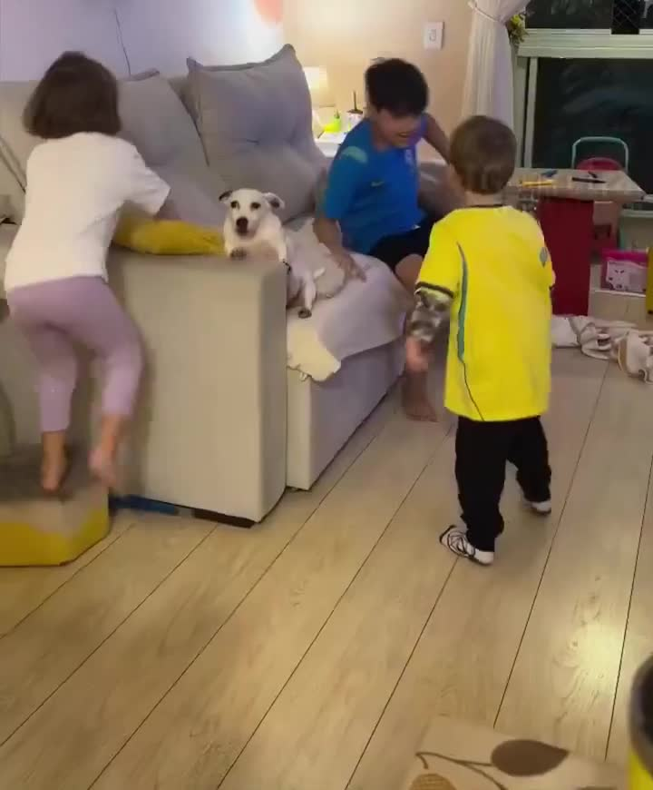
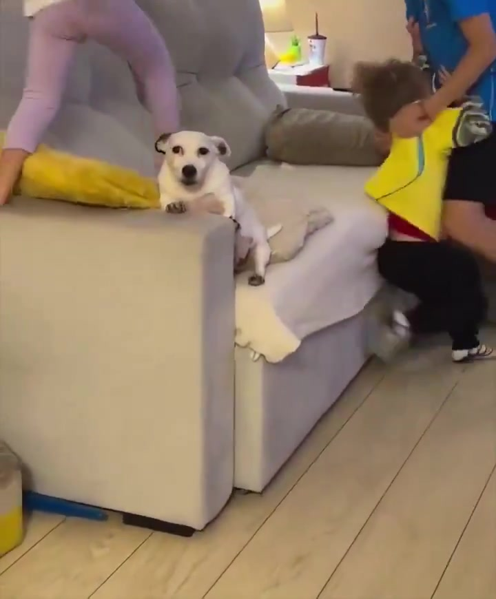

対象：X @lolmame318「この犬本当にすき」の犬カード。
直す前
タイトル：愛嬌たっぷりな犬が一生懸命に動きを見せる様子
コピー：投稿者が思わず「本当にすき」とこぼしてしまうほど魅力的な犬の姿。その一挙手一投足から目が離せなくなるような、愛くるしい瞬間が収められています。
→ 元投稿の一言だけから想像で書かれていて、動画の中身と違っていた（実際は兄弟が取っ組み合いをしていて犬が困っている場面）。
直した後（コードはmain合流済み）
タイトル：兄弟の取っ組み合いに巻き込まれ、犬だけ本気で困り顔
コピー：ソファの上で兄弟が本気の取っ組み合いを始めた瞬間、逃げ場をなくしたのは白い犬。耳を伏せてじっと固まり、こっちを見つめる目がなんとも言えない。周りは大騒ぎなのに犬だけ状況についていけていない——そのギャップに笑ってしまう一本。
実際にyt-dlpで動画をダウンロードし、ffmpegでフレームを抜いて目視確認した上で書き直した（下の3枚がその時に抜いたフレーム）。
⚠まだ本番DBには出ていません（2026-09-17 実測・読み取りで確認済み。タイトルはまだ「愛嬌たっぷりな犬が…」のまま）。
直った文面と、それを書き込む一度きり便（スクリプト＋GitHub Actionsワークフロー）は両方ともmainへ入っている。ただしDBの書き込みはそのGitHub Actionsが実行する設計で、今そのGitHub Actions自体が、tamago2022アカウントの支払いエラーでリポジトリ全体止まっている（直近30件中22件失敗、2026-09-15夜から継続）。
これはAI側では直せない、お金の設定の話（GitHub本体アプリ内の「Settings → Billing and plans」で支払い方法を直すだけ）。ここにリンクは置かない（ログインしていない状態で開くと開けないページのため）。店主がご自身のGitHubアプリ／サイトから開いて直すと、待っていた一度きり便が自動で動いてDBが書き換わり、この棚ページに反映される（Lovableの公開ボタンとは無関係）。


修正スクリプト・GitHub Actionsワークフローのコード自体は非公開リポジトリの中にあるため、ここにはリンクを置いていません（開いても404になるため）。中身は上の「直した後」の文面と同じもので、両方ともmainへ入っています。GitHubの支払い設定ページも、ログインしていない状態で開くと404になるためリンクを置いていません（店主ご自身のGitHubアプリ／サイトから「Settings → Billing and plans」を開いてください）。